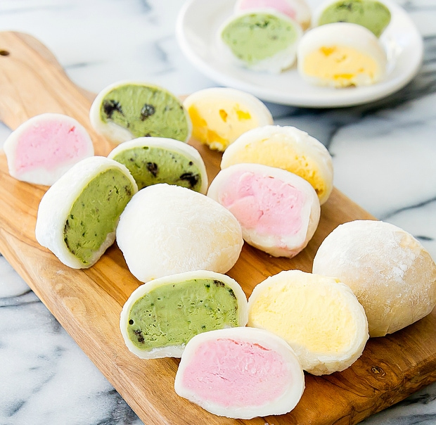

Mochi

Description:
Mochi are small, sweet Japanese cakes made with glutinous rice flour (mochiko).
They have a soft, chewy outer layer and a deliciously sticky filling made of sweetened red bean paste. Freezing the red bean paste before you use it is optional but it does make the process easier.
Satisfy your sweet tooth with homemade mochi. Trust us: The process is way simpler than you think. This easy mochi recipe comes together quickly with just a few ingredients.
Ingredients:
- Red Bean Paste
- Glutinous Rice Flour
- Green Tea Powder
- Water
- Sugar
- Cornstarch
Steps:
- Freeze Red Bean Paste
Wrap red bean paste in foil and freeze until solid. Once the paste is frozen, divide and roll into eight equal balls. Set aside or return to the freezer.
- Prepare and Cook Dough
Mix sweet rice flour and green tea powder in a microwave-safe bowl. Stir in water, then stir in the sugar. Mix until smooth. Cover bowl with plastic wrap and cook in the microwave for about 3 minutes and 30 seconds. Stir the mixture, then heat in the microwave for an additional 15-30 seconds.
- Roll Dough Balls
Dust your work surface with cornstarch. Roll the (still hot) dough into balls. Flatten each ball and place one frozen red bean paste ball in the center. Pinch the mochi over the paste until covered. Sprinkle with more cornstarch and place the mochi (seam side down) in a paper muffin liner.
Repeat the steps until all the dough and frozen paste is used.